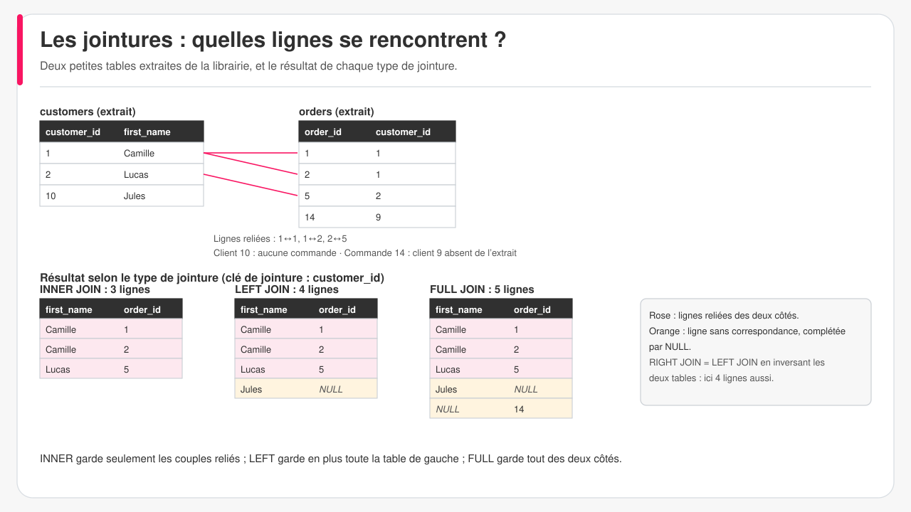

Pourquoi relier les tables ?
Le modèle relationnel range chaque information une seule fois. Résultat : pour afficher « le nom du client avec la date de sa commande », il faut aller chercher le nom dans customers et la date dans orders. Une jointure (join) combine les lignes de deux tables selon une condition de jointure, le plus souvent clé étrangère = clé primaire.
Le produit cartésien : ce qu’on évite
Sans condition, la combinaison de deux tables associe chaque ligne de l’une à chaque ligne de l’autre : c’est le produit cartésien (CROSS JOIN).
SELECT COUNT(*) AS pairs
FROM customers
CROSS JOIN categories;
Résultat attendu sur le jeu de données de référence (obtenu en exécutant la requête lors de la génération du cours).
| pairs |
|---|
| 84 |
12 clients × 7 catégories = 84 combinaisons, presque toutes absurdes. Une jointure utile est un produit cartésien filtré par une condition qui garde les couples pertinents.
INNER JOIN : les lignes qui se correspondent

SELECT c.first_name, c.last_name, o.order_id, o.order_date, o.status
FROM customers AS c
INNER JOIN orders AS o ON o.customer_id = c.customer_id
WHERE c.customer_id IN (1, 2)
ORDER BY o.order_id;
Résultat attendu sur le jeu de données de référence (obtenu en exécutant la requête lors de la génération du cours).
| first_name | last_name | order_id | order_date | status |
|---|---|---|---|---|
| Camille | Durand | 1 | 2024-01-05 | shipped |
| Camille | Durand | 2 | 2024-03-12 | shipped |
| Camille | Durand | 3 | 2024-06-20 | paid |
| Camille | Durand | 4 | 2024-11-02 | pending |
| Lucas | Martin | 5 | 2024-02-14 | shipped |
| Lucas | Martin | 6 | 2024-07-08 | cancelled |
Décortiquons :
customers AS cetorders AS o: des alias de tables, qui raccourcissent l’écriture (c.first_nameplutôt quecustomers.first_name).INNER JOIN … ON o.customer_id = c.customer_id: on associe chaque commande au client qu’elle désigne.ONcontient la condition de jointure.WHEREfiltre ensuite les lignes obtenues.
INNER JOIN ne garde que les lignes qui ont une correspondance des deux côtés. Un client sans commande disparaît du résultat. JOIN seul est un synonyme de INNER JOIN.
LEFT JOIN : garder toute la table de gauche
LEFT JOIN (ou LEFT OUTER JOIN) conserve toutes les lignes de la table de gauche ; quand aucune ligne de droite ne correspond, les colonnes de droite valent NULL.
SELECT c.customer_id, c.first_name, o.order_id
FROM customers AS c
LEFT JOIN orders AS o ON o.customer_id = c.customer_id
WHERE o.order_id IS NULL
ORDER BY c.customer_id;
Résultat attendu sur le jeu de données de référence (obtenu en exécutant la requête lors de la génération du cours).
| customer_id | first_name | order_id |
|---|---|---|
| 10 | Jules | NULL |
| 11 | Inès | NULL |
| 12 | Arthur | NULL |
Technique classique pour trouver les clients sans commande : on garde tout, puis on retient les lignes où la commande est NULL. Ce sont les clients 10, 11 et 12.
Comparons les volumes, sur toute la table :
SELECT COUNT(*) AS inner_rows
FROM customers AS c
INNER JOIN orders AS o ON o.customer_id = c.customer_id;
Résultat attendu sur le jeu de données de référence (obtenu en exécutant la requête lors de la génération du cours).
| inner_rows |
|---|
| 14 |
SELECT COUNT(*) AS left_rows
FROM customers AS c
LEFT JOIN orders AS o ON o.customer_id = c.customer_id;
Résultat attendu sur le jeu de données de référence (obtenu en exécutant la requête lors de la génération du cours).
| left_rows |
|---|
| 17 |
14 lignes avec INNER JOIN (une par commande), 17 avec LEFT JOIN : les 14 commandes + les 3 clients sans commande.
ON ou WHERE avec une jointure externe ?
Avec LEFT JOIN, une condition placée dans ON et la même dans WHERE ne sont pas équivalentes.
SELECT c.customer_id, o.order_id
FROM customers AS c
LEFT JOIN orders AS o ON o.customer_id = c.customer_id AND o.status = 'cancelled'
WHERE c.customer_id IN (1, 2)
ORDER BY c.customer_id, o.order_id;
Résultat attendu sur le jeu de données de référence (obtenu en exécutant la requête lors de la génération du cours).
| customer_id | order_id |
|---|---|
| 1 | NULL |
| 2 | 6 |
Dans ON, la condition décide quelles commandes s’associent ; le client 1 reste présent, avec NULL. Placée dans WHERE, elle supprime les lignes après coup :
SELECT c.customer_id, o.order_id
FROM customers AS c
LEFT JOIN orders AS o ON o.customer_id = c.customer_id
WHERE c.customer_id IN (1, 2) AND o.status = 'cancelled'
ORDER BY c.customer_id, o.order_id;
Résultat attendu sur le jeu de données de référence (obtenu en exécutant la requête lors de la génération du cours).
| customer_id | order_id |
|---|---|
| 2 | 6 |
Le client 1 a disparu : la ligne NULL ne satisfait pas o.status = 'cancelled', et la jointure externe est annulée en pratique.
RIGHT JOIN : le miroir
RIGHT JOIN conserve toute la table de droite. C’est un LEFT JOIN dont on a échangé les tables ; la plupart des équipes n’écrivent que des LEFT JOIN par lisibilité.
SELECT c.customer_id, COUNT(o.order_id) AS orders_count
FROM orders AS o
RIGHT JOIN customers AS c ON o.customer_id = c.customer_id
GROUP BY c.customer_id
ORDER BY c.customer_id;
Résultat attendu sur le jeu de données de référence (obtenu en exécutant la requête lors de la génération du cours).
| customer_id | orders_count |
|---|---|
| 1 | 4 |
| 2 | 2 |
| 3 | 2 |
| 4 | 1 |
| 5 | 1 |
| 6 | 1 |
| 7 | 1 |
| 8 | 1 |
| 9 | 1 |
| 10 | 0 |
| 11 | 0 |
| 12 | 0 |
Remarquez COUNT(o.order_id) : il compte les commandes non NULL et donne 0 pour les clients sans commande. COUNT(*) aurait donné 1 pour eux, car la ligne NULL existe bel et bien.
FULL OUTER JOIN : tout garder des deux côtés
Dans notre base, les clés étrangères garantissent qu’aucune commande n’est orpheline : un FULL JOIN clients/commandes ne montrerait rien de plus qu’un LEFT JOIN. Pour voir des lignes non appariées des deux côtés, comparons deux ensembles : les clients abonnés à la newsletter et les clients qui ont commandé.
PostgreSQL
SELECT a.customer_id AS newsletter_id, b.customer_id AS buyer_id
FROM (SELECT customer_id FROM customers WHERE newsletter_opt_in = TRUE) AS a
FULL OUTER JOIN (SELECT DISTINCT customer_id FROM orders) AS b
ON a.customer_id = b.customer_id
ORDER BY COALESCE(a.customer_id, b.customer_id);
MySQL
SELECT * FROM (
SELECT a.customer_id AS newsletter_id, b.customer_id AS buyer_id
FROM (SELECT customer_id FROM customers WHERE newsletter_opt_in = TRUE) AS a
LEFT JOIN (SELECT DISTINCT customer_id FROM orders) AS b ON a.customer_id = b.customer_id
UNION
SELECT a.customer_id, b.customer_id
FROM (SELECT customer_id FROM customers WHERE newsletter_opt_in = TRUE) AS a
RIGHT JOIN (SELECT DISTINCT customer_id FROM orders) AS b ON a.customer_id = b.customer_id
) AS full_result
ORDER BY COALESCE(newsletter_id, buyer_id);
SQLite
SELECT a.customer_id AS newsletter_id, b.customer_id AS buyer_id
FROM (SELECT customer_id FROM customers WHERE newsletter_opt_in = TRUE) AS a
FULL OUTER JOIN (SELECT DISTINCT customer_id FROM orders) AS b
ON a.customer_id = b.customer_id
ORDER BY COALESCE(a.customer_id, b.customer_id);
Résultat attendu sur le jeu de données de référence (les trois variantes produisent le même résultat logique).
| newsletter_id | buyer_id |
|---|---|
| 1 | 1 |
| NULL | 2 |
| 3 | 3 |
| NULL | 4 |
| 5 | 5 |
| NULL | 6 |
| 7 | 7 |
| NULL | 8 |
| 9 | 9 |
| 11 | NULL |
Lecture : la ligne (11, NULL) est un abonné qui n’a jamais commandé ; les lignes (NULL, 2), (NULL, 4)… sont des acheteurs non abonnés ; les autres sont dans les deux ensembles. La clause FROM (SELECT …) AS a est une table dérivée : un résultat de requête utilisé comme une table (voir chapitre 9). MySQL émule le FULL JOIN en réunissant un LEFT JOIN et un RIGHT JOIN avec UNION (chapitre 10).
La jointure « historique » : FROM et WHERE
Avant l’apparition de JOIN, on listait les tables dans FROM, séparées par des virgules, et la condition de jointure allait dans WHERE. Le référentiel ENI accepte cette forme.
SELECT c.first_name, o.order_id
FROM customers AS c, orders AS o
WHERE o.customer_id = c.customer_id
AND c.customer_id = 2
ORDER BY o.order_id;
Résultat attendu sur le jeu de données de référence (obtenu en exécutant la requête lors de la génération du cours).
| first_name | order_id |
|---|---|
| Lucas | 5 |
| Lucas | 6 |
Résultat identique à un INNER JOIN. Limites : si vous oubliez la condition, vous obtenez silencieusement un produit cartésien ;
SELECT COUNT(*) AS pairs
FROM customers AS c, orders AS o;
Résultat attendu sur le jeu de données de référence (obtenu en exécutant la requête lors de la génération du cours).
| pairs |
|---|
| 168 |
12 × 14 = 168 lignes sans aucune erreur. De plus, la condition de jointure se mélange aux filtres métier dans le même WHERE, et cette syntaxe ne permet pas d’exprimer une jointure externe de façon portable. Préférez JOIN … ON dans vos requêtes ; sachez lire l’ancienne forme dans le code existant.
Plusieurs jointures et ambiguïtés
On enchaîne les jointures pour traverser plusieurs tables : client → commande → ligne → livre.
SELECT c.first_name, o.order_id, b.title, oi.quantity
FROM customers AS c
INNER JOIN orders AS o ON o.customer_id = c.customer_id
INNER JOIN order_items AS oi ON oi.order_id = o.order_id
INNER JOIN books AS b ON b.book_id = oi.book_id
WHERE o.order_id = 3
ORDER BY b.book_id;
Résultat attendu sur le jeu de données de référence (obtenu en exécutant la requête lors de la génération du cours).
| first_name | order_id | title | quantity |
|---|---|---|---|
| Camille | 3 | Le Rouge et le Noir | 1 |
| Camille | 3 | Germinal | 1 |
| Camille | 3 | Le Chien des Baskerville | 1 |
Quand deux tables ont une colonne du même nom (customer_id existe dans customers et orders), la citer sans préfixe est ambiguë :
SELECT customer_id
FROM customers AS c
INNER JOIN orders AS o ON o.customer_id = c.customer_id;
Message d’erreur obtenu avec SQLite (les messages de PostgreSQL et MySQL sont rédigés autrement, mais l’instruction est aussi refusée) :
OperationalError: ambiguous column name: customer_id
Les trois moteurs refusent (ambiguous). Solution : préfixer par l’alias (c.customer_id).
Autojointure
Une table peut être jointe à elle-même, avec deux alias différents. Exemple : toutes les paires de livres de la catégorie Policier.
SELECT a.title AS first_book, b.title AS second_book
FROM books AS a
INNER JOIN books AS b ON a.category_id = b.category_id AND a.book_id < b.book_id
WHERE a.category_id = 2
ORDER BY a.book_id, b.book_id;
Résultat attendu sur le jeu de données de référence (obtenu en exécutant la requête lors de la génération du cours).
| first_book | second_book |
|---|---|
| Le Crime de lOrient-Express | Le Chien des Baskerville |
| Le Crime de lOrient-Express | Arsène Lupin, gentleman-cambrioleur |
| Le Chien des Baskerville | Arsène Lupin, gentleman-cambrioleur |
La condition a.book_id < b.book_id évite de produire à la fois (A, B) et (B, A), ainsi que (A, A).
Agréger sur plusieurs tables
Chiffre d’affaires par catégorie : il faut traverser categories, books et order_items.
SELECT cat.category_name,
ROUND(SUM(oi.quantity * oi.unit_price), 2) AS revenue
FROM categories AS cat
INNER JOIN books AS b ON b.category_id = cat.category_id
INNER JOIN order_items AS oi ON oi.book_id = b.book_id
GROUP BY cat.category_name
ORDER BY revenue DESC, cat.category_name;
Résultat attendu sur le jeu de données de référence (obtenu en exécutant la requête lors de la génération du cours).
| category_name | revenue |
|---|---|
| Informatique | 129.60 |
| Roman | 94.30 |
| Science-fiction | 57.80 |
| Policier | 37.50 |
| Jeunesse | 28.00 |
| Histoire | 25.50 |
Attention à la lecture : ce chiffre inclut toutes les lignes de commande, y compris celles de commandes annulées ; un chiffre d’affaires « réel » filtrerait sur o.status (exercice ci-dessous). Pour afficher aussi les catégories sans vente (Poésie), il faudrait un LEFT JOIN.
Avec un LEFT JOIN, le nombre de commandes par client, zéro compris :
SELECT c.customer_id, c.last_name, COUNT(o.order_id) AS orders_count
FROM customers AS c
LEFT JOIN orders AS o ON o.customer_id = c.customer_id
GROUP BY c.customer_id, c.last_name
ORDER BY c.customer_id;
Résultat attendu sur le jeu de données de référence (obtenu en exécutant la requête lors de la génération du cours).
| customer_id | last_name | orders_count |
|---|---|---|
| 1 | Durand | 4 |
| 2 | Martin | 2 |
| 3 | Bernard | 2 |
| 4 | Petit | 1 |
| 5 | Robert | 1 |
| 6 | Richard | 1 |
| 7 | Dubois | 1 |
| 8 | Moreau | 1 |
| 9 | Laurent | 1 |
| 10 | Simon | 0 |
| 11 | Michel | 0 |
| 12 | Lefèbvre | 0 |
Le piège : multiplier les lignes
Chaque jointure 1 – N répète la ligne du côté « 1 » autant de fois qu’il y a de lignes liées. Si l’on additionne ensuite une colonne du côté « 1 », on la compte plusieurs fois.
Les paiements valent au total :
SELECT ROUND(SUM(amount), 2) AS payments_total
FROM payments;
Résultat attendu sur le jeu de données de référence (obtenu en exécutant la requête lors de la génération du cours).
| payments_total |
|---|
| 295.00 |
Mais si l’on joint les paiements aux lignes de commande avant de sommer, chaque paiement est répété une fois par ligne :
SELECT ROUND(SUM(p.amount), 2) AS wrong_total
FROM payments AS p
INNER JOIN order_items AS oi ON oi.order_id = p.order_id;
Résultat attendu sur le jeu de données de référence (obtenu en exécutant la requête lors de la génération du cours).
| wrong_total |
|---|
| 624.10 |
Le second total est faux (gonflé), sans aucune erreur affichée. Règle : avant d’agréger après une jointure, demandez-vous « à quelle granularité est ma ligne ? » et agrégez chaque table à son propre niveau, éventuellement dans une sous-requête.
Exercice guidé : le nom des clients ayant plus de trois commandes
Reprenez la demande du chapitre 7 et affichez le nom des clients qui ont passé plus de trois commandes, avec le nombre de commandes. Étapes : (1) tables nécessaires ; (2) jointure ; (3) regroupement ; (4) filtre de groupe.
Afficher la correction détaillée
SELECT c.customer_id, c.first_name, c.last_name, COUNT(o.order_id) AS orders_count
FROM customers AS c
INNER JOIN orders AS o ON o.customer_id = c.customer_id
GROUP BY c.customer_id, c.first_name, c.last_name
HAVING COUNT(o.order_id) > 3;
Résultat attendu sur le jeu de données de référence (obtenu en exécutant la requête lors de la génération du cours).
| customer_id | first_name | last_name | orders_count |
|---|---|---|---|
| 1 | Camille | Durand | 4 |
(1) customers pour le nom, orders pour le compte. (2) INNER JOIN : un client sans commande ne pourrait de toute façon pas dépasser trois. (3) On regroupe par client ; les colonnes d’identité sont dans le GROUP BY (règle d’or du chapitre 7). (4) HAVING filtre les groupes. Variante : calculer le compte dans une sous-requête (chapitre 9).
Exercice autonome : chiffre d’affaires réel par catégorie
Calculez, par catégorie, le chiffre d’affaires des commandes payées ou expédiées uniquement (statuts paid et shipped), arrondi à deux décimales, du plus élevé au plus faible.
Afficher la correction détaillée
SELECT cat.category_name,
ROUND(SUM(oi.quantity * oi.unit_price), 2) AS revenue
FROM categories AS cat
INNER JOIN books AS b ON b.category_id = cat.category_id
INNER JOIN order_items AS oi ON oi.book_id = b.book_id
INNER JOIN orders AS o ON o.order_id = oi.order_id
WHERE o.status IN ('paid', 'shipped')
GROUP BY cat.category_name
ORDER BY revenue DESC, cat.category_name;
Résultat attendu sur le jeu de données de référence (obtenu en exécutant la requête lors de la génération du cours).
| category_name | revenue |
|---|---|
| Informatique | 94.70 |
| Roman | 70.50 |
| Science-fiction | 38.80 |
| Policier | 37.50 |
| Jeunesse | 28.00 |
| Histoire | 25.50 |
Il faut ajouter la table orders pour accéder au statut. Le filtre WHERE o.status IN (…) porte sur des lignes : il précède le regroupement. Comparez avec le total précédent : les commandes annulées ou en attente ne sont plus comptées.
Exercice de débogage : le client qui disparaît
On veut lister tous les clients 1 à 3 avec leurs commandes annulées éventuelles. Cette requête oublie le client 1 :
SELECT c.customer_id, o.order_id FROM customers c LEFT JOIN orders o
ON o.customer_id = c.customer_id
WHERE c.customer_id IN (1,2,3) AND o.status = 'cancelled';
Pourquoi, et quelle est la correction ?
Afficher la correction détaillée
La condition o.status = 'cancelled' dans le WHERE élimine les lignes où o est NULL : le LEFT JOIN est neutralisé. Correction : déplacer cette condition dans le ON.
SELECT c.customer_id, o.order_id
FROM customers AS c
LEFT JOIN orders AS o ON o.customer_id = c.customer_id AND o.status = 'cancelled'
WHERE c.customer_id IN (1, 2, 3)
ORDER BY c.customer_id, o.order_id;
Résultat attendu sur le jeu de données de référence (obtenu en exécutant la requête lors de la génération du cours).
| customer_id | order_id |
|---|---|
| 1 | NULL |
| 2 | 6 |
| 3 | NULL |
Valider · question 1
Voir la justification de chaque réponse
- Incorrect — INNER JOIN : Elle exige une correspondance des deux côtés.
- Bonne réponse — LEFT JOIN avec customers à gauche : Elle conserve toutes les lignes de la table de gauche.
- Incorrect — CROSS JOIN : Elle produit toutes les combinaisons sans condition.
Valider · question 2
Voir la justification de chaque réponse
- Incorrect — Ils sont toujours identiques : Pas avec des lignes complétées par NULL.
- Bonne réponse — COUNT(*) compte la ligne complétée par NULL ; COUNT(o.order_id) l’ignore : Pour un client sans commande, le premier donne 1 et le second 0.
- Incorrect — COUNT(*) ignore les clients : COUNT(*) compte toutes les lignes du résultat.
Valider · question 3
Voir la justification de chaque réponse
- Incorrect — PostgreSQL : Il le propose.
- Incorrect — SQLite 3.45 : Il le propose depuis la version 3.39.0.
- Bonne réponse — MySQL : Il faut l’émuler avec LEFT JOIN, RIGHT JOIN et UNION.